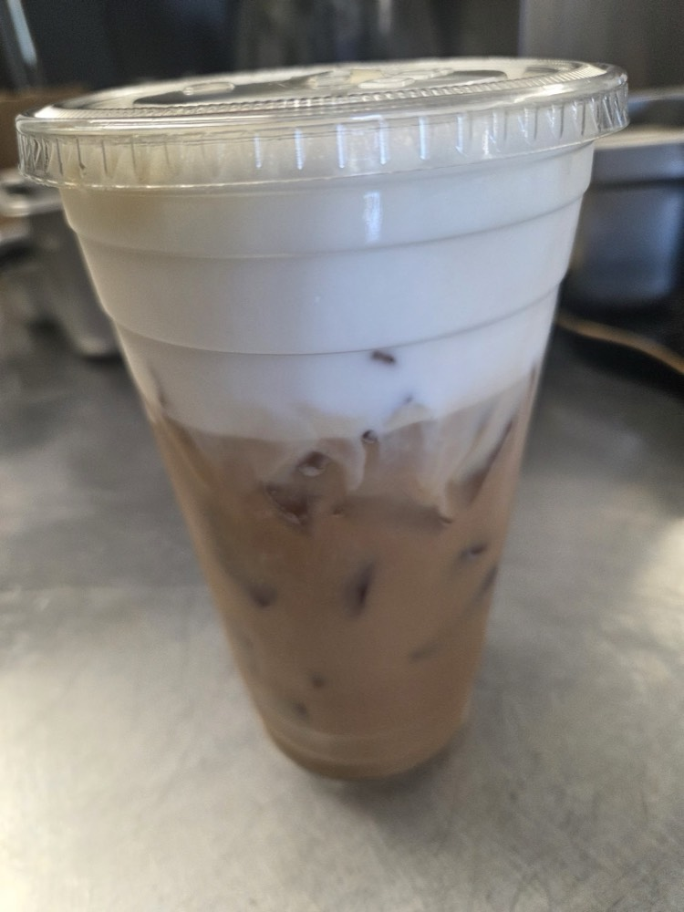
Coffee & drinks
Coffee, tea, mocha, latte, cappuccino and chai, hot or iced. Boba, hot chocolate, and a half gallon of iced coffee when one cup won't do.
Drinks menuTue–Sun · closed Mondays
Fresh pastries made daily in house, locally roasted coffee to order or by the pound, and a charming little room full of vinyl. Find us at Mill Pond Plaza on Franklin Street in Westerly.
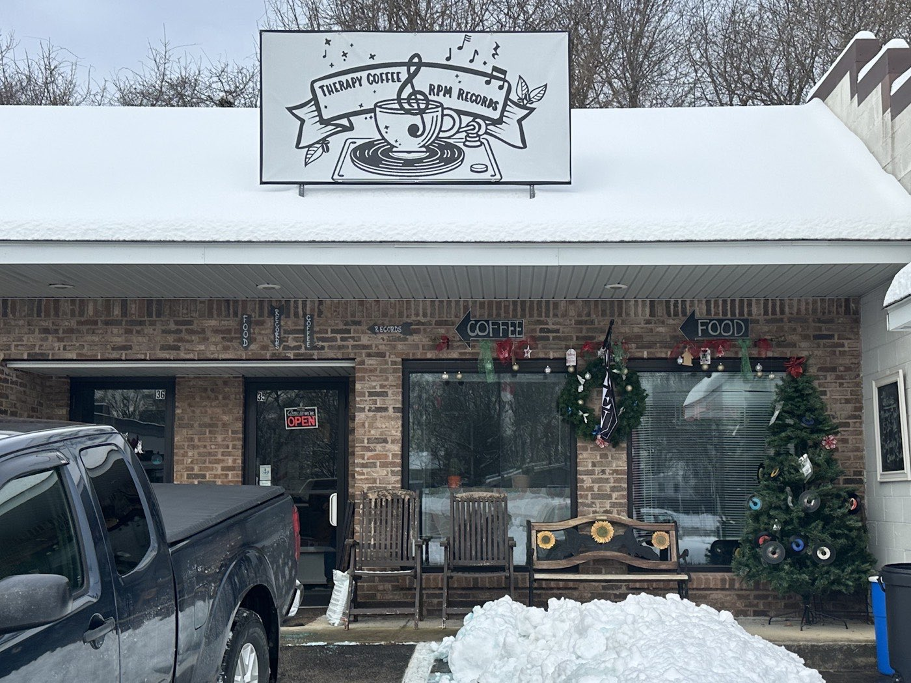
What's on the counter
Coffee and tea hot or iced, a short breakfast and lunch menu, and a pastry case filled every morning. Ask about the daily specials.

Coffee, tea, mocha, latte, cappuccino and chai, hot or iced. Boba, hot chocolate, and a half gallon of iced coffee when one cup won't do.
Drinks menu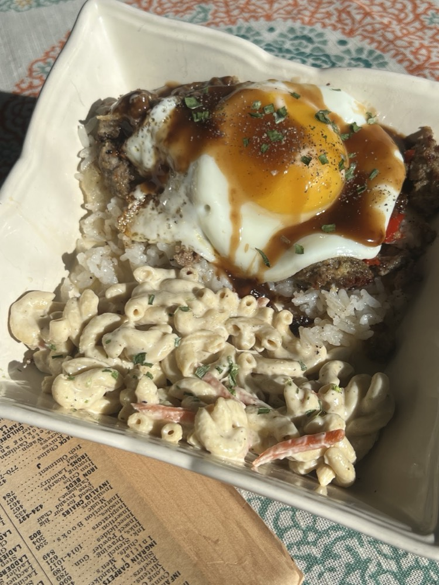
Breakfast sandwiches on English muffin, bagel, Texas toast or waffle, quiche of the day, kielbasa, a chorizo burrito and the loco moco.
Food menu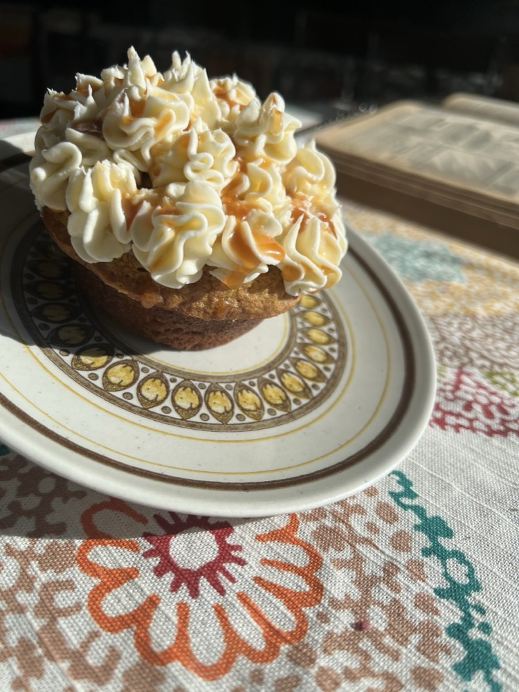
Daily pastries like the peanut butter bomb, pumpkin cream cheese muffin, apple puff pastry, banana bread and lemon pound cake.
Bakery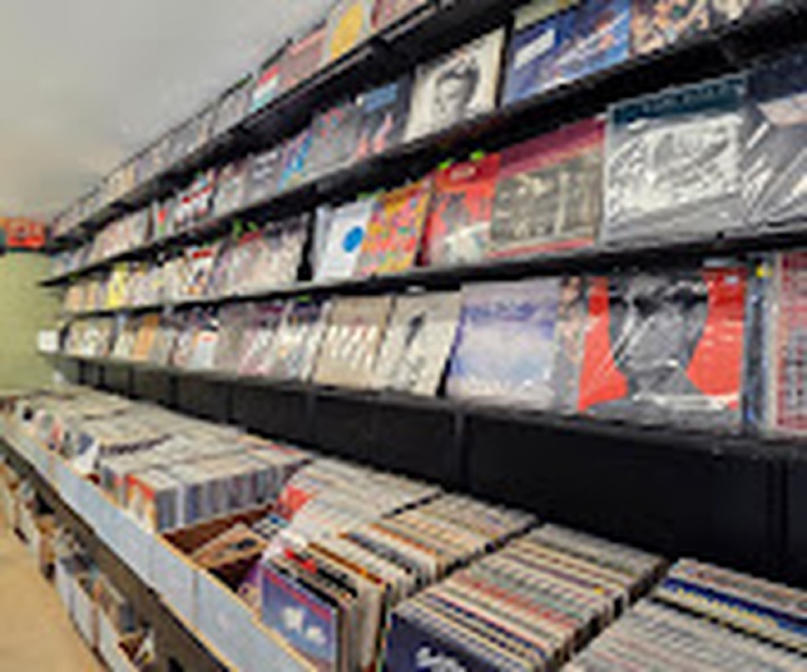
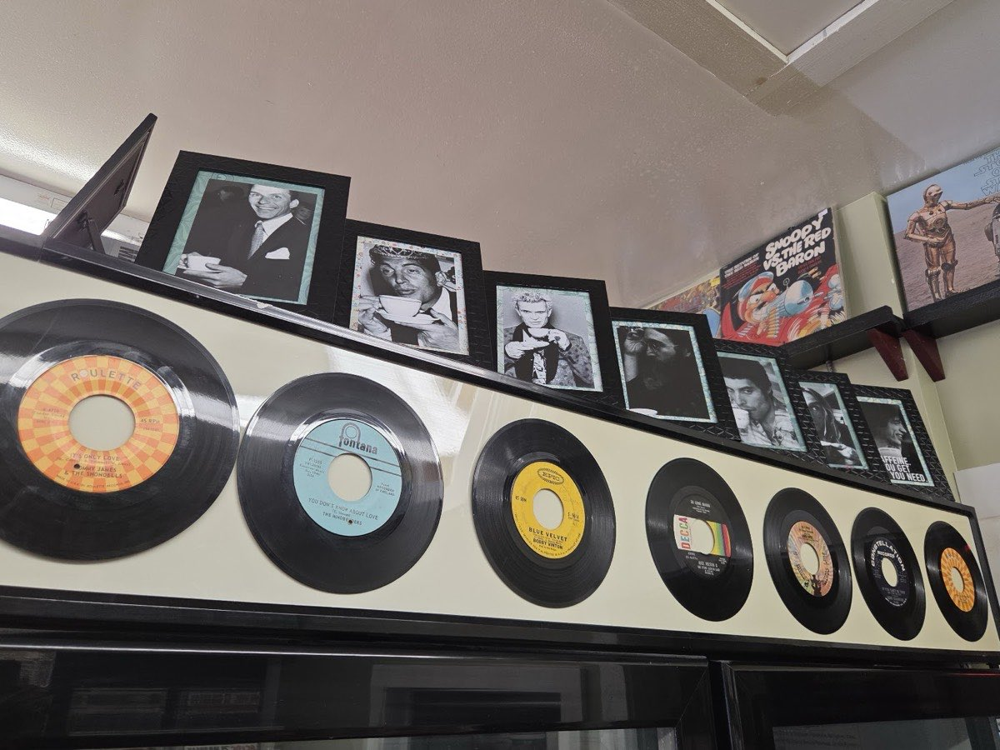
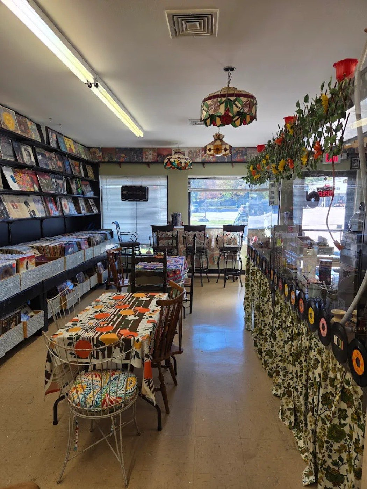
RPM Records
The hand-painted signs out front say it all. Grab a latte, then flip through the record bins and the 45s on the wall. It is all one room, so your coffee and the crates are a few steps apart.
From the kitchen


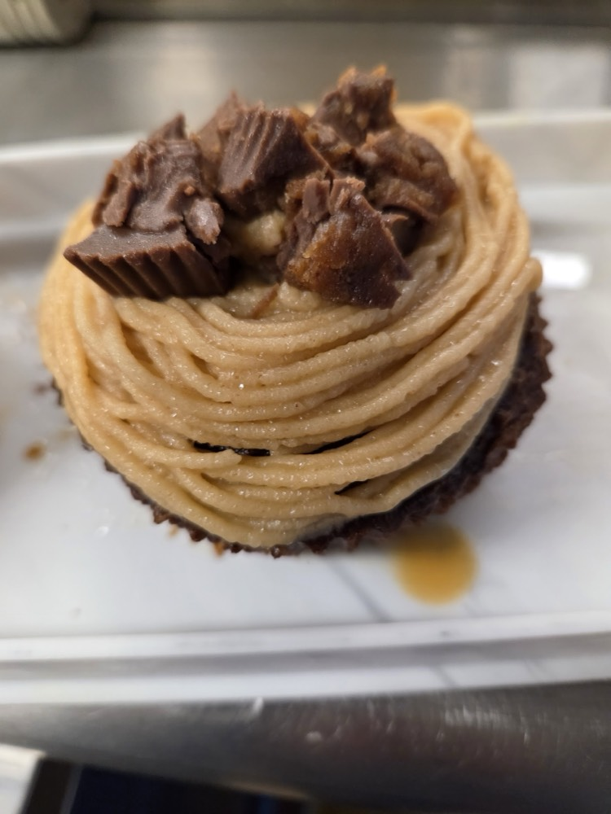

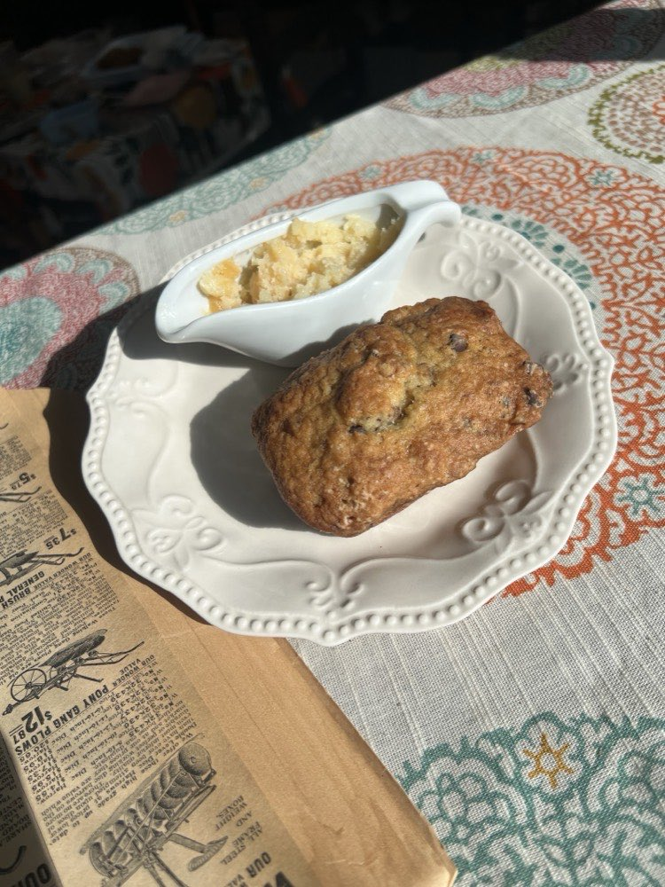
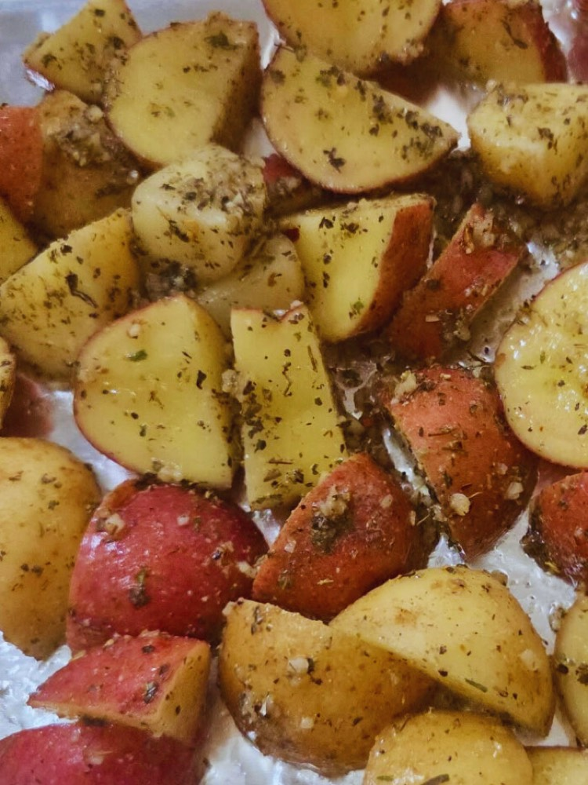
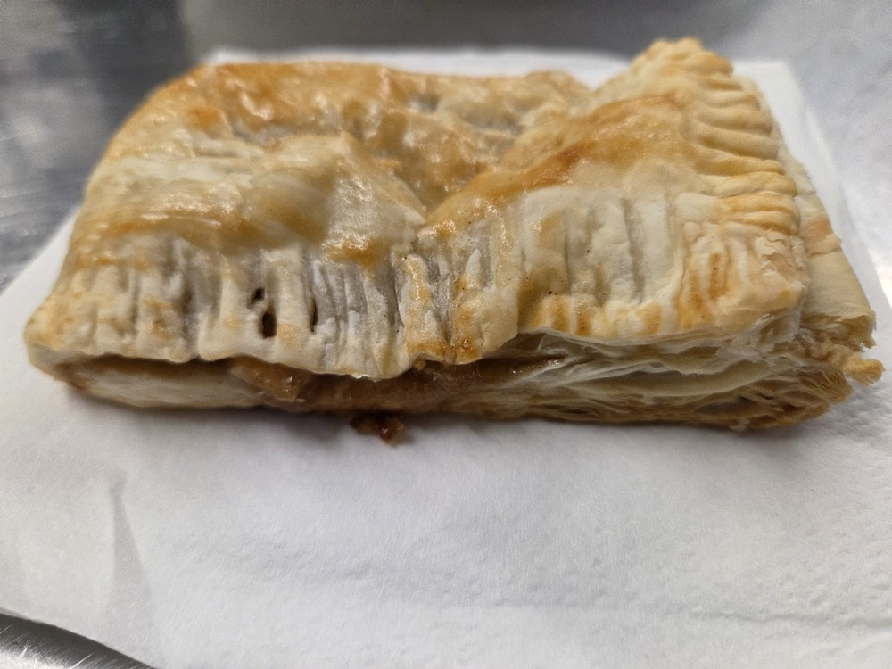
Catering options available
Order a mixed pastry box of six, a half gallon of iced coffee, or talk to us about catering. Tell us what you need and when, then give us a call to confirm.
Hours & visit
105 Franklin St, Unit 35, Westerly, RI 02891. Plenty of free parking in the plaza lot.
| Tuesday | 6:00 AM – 2:00 PM |
|---|---|
| Wednesday | 6:00 AM – 2:00 PM |
| Thursday | 6:00 AM – 2:00 PM |
| Friday | 6:00 AM – 2:00 PM |
| Saturday | 7:30 AM – 2:00 PM |
| Sunday | 7:30 AM – 2:00 PM |
| Monday | Closed |
Good to know
Tuesday to Friday 6 AM to 2 PM, Saturday and Sunday 7:30 AM to 2 PM. Closed Mondays.
Yes. Locally roasted coffee is sold to order or by the pound; the menu lists a 4 oz bag and a 12 oz bag.
Yes, catering options are available. Call 401-352-4222 or use the order form above.
Delivery is available through DoorDash. You can also eat in, take out or use curbside pickup.
Yes. There is a free parking lot at Mill Pond Plaza plus free street parking, and free Wi-Fi inside. The entrance and parking are wheelchair accessible.